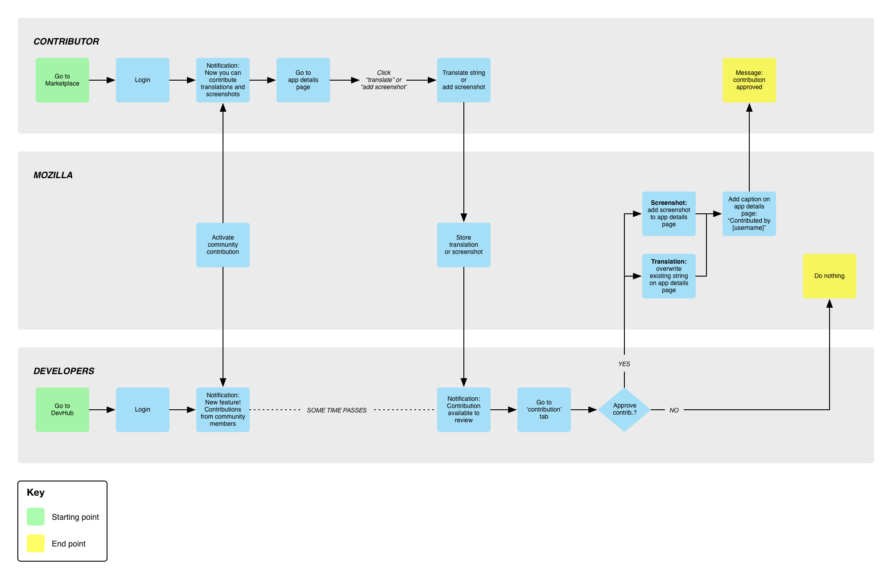

---
layout: MarketplaceUXSpec
multipage: false
---	

<div class="container">
	<h1>Customer Journey Map &rarr; Supplement app listing page with screenshots</h1>

	<!-- Pagination. If you have more than one page, set the multipage variable in the Frontmatter to true. Editing the pagination code happens in /_includes/homePagination.html. -->
	{% if page.multipage %}
		{% include homePagination.html %}
	{% endif %}

	<div class="col-sm-12 col-md-12 col-lg-12">
	
	  <h2>What is it?</h2>
    
    <p class="longText">A lot of apps – even big name ones – are guilty of not having proper screenshots. Sometimes, they would be surrounded by a desktop chrome. Sometimes, they would be snapped from an iOS or Android device. Sometimes, they would not be representative of what the app actually does (a game guide app might have a screenshot of the game itself, not of the guide).</p>
    
    <p class="longText">By adding functional and good-looking screenshots taken with Firefox OS devices, community contributors can help increase the quality of app details pages, making them both more accurate and attractive.</p>
    
    <p class="longText">The customer journey map goes like this:</p>
    
    <h3>Launch and activation</h3>
    
    <ol class="longText">
      <li>Mozilla activates community contribution. This will do three things:
        <ol>
          <li>Enable translate and add screenshot links on App Details page</li>
          <li>Notify all contributors who log in that they can now add translations and screenshots to the app details page</li>
          <li>Notify all developers who log in that they can now accept contributions. The tone of the messaging emphasises the newness of the feature.</li>
        </ol>
      </li>
      <li>When a contribution is received, developers get notified. The notification here can’t be as splashy as the “New feature” notification. Maybe it’s a bar that appears up top. Maybe it’s a ① that appears to the side of the Contributions tab. There are many ways we can do this.</li>
    </ol>
    
    <h3>Moderation</h3>

    <ol class="longText">
      <li>After a translation/screenshot is submitted by a contributor, it’s stored by the system</li>
      <li>The system notifies developers that a contribution is ready</li>
      <li>Developers can view contribution, then approve or decline it
        <ul>
          <li>If approved contribution is a screenshot, it’s appended to the existing screenshot gallery</li>
          <li>If approved contribution is a translation, it overwrites any translation that’s currently up</li>
          <li>If contribution is not approved, it doesn’t go up anywhere</li>
        </ul>
      </li>
    </ol>
    
    <p class="longText">So there are two end points. Either the contribution is approved, or declined.</p>
    
    
    
    <h3><a href="concept-screenshots.html">See concepts</h3>
	  		
	</div>
	
		
